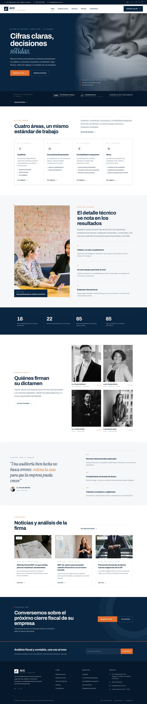
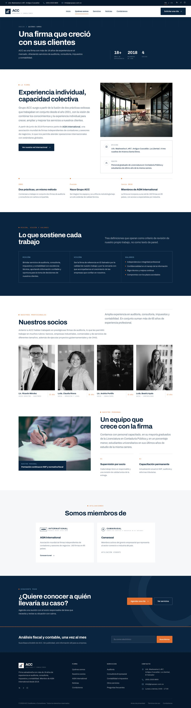
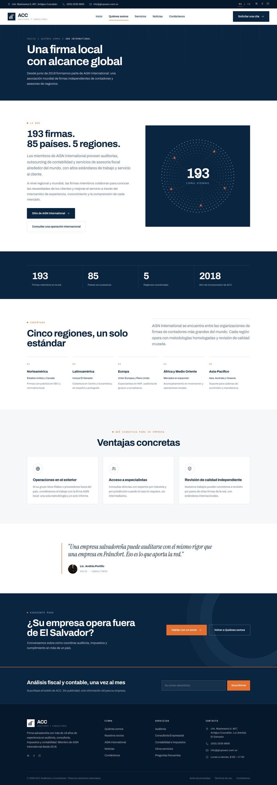
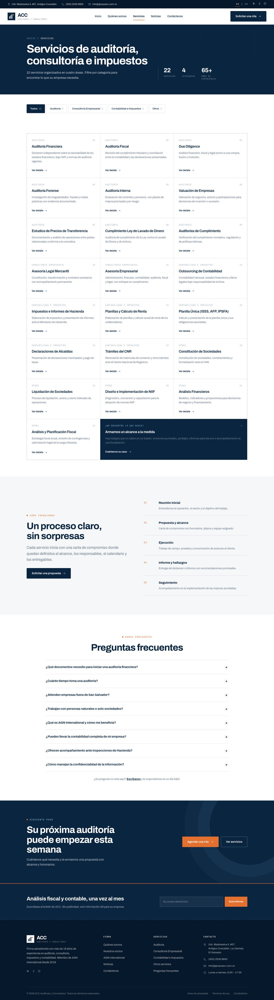
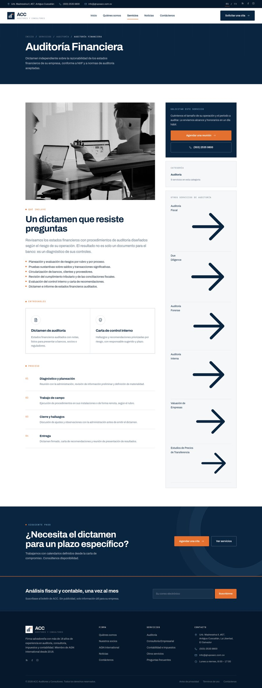
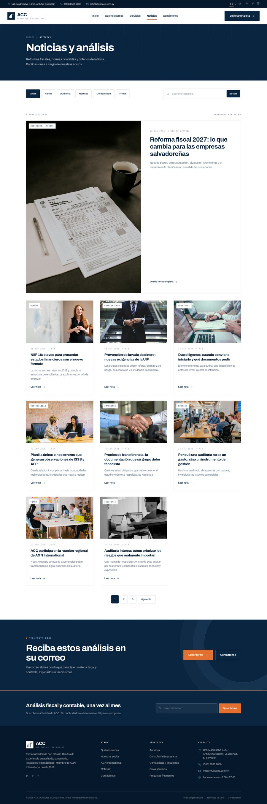
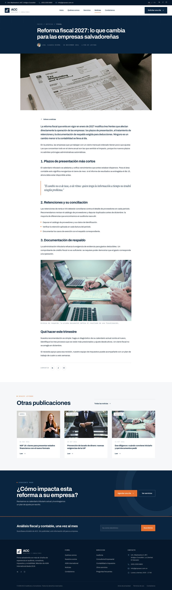
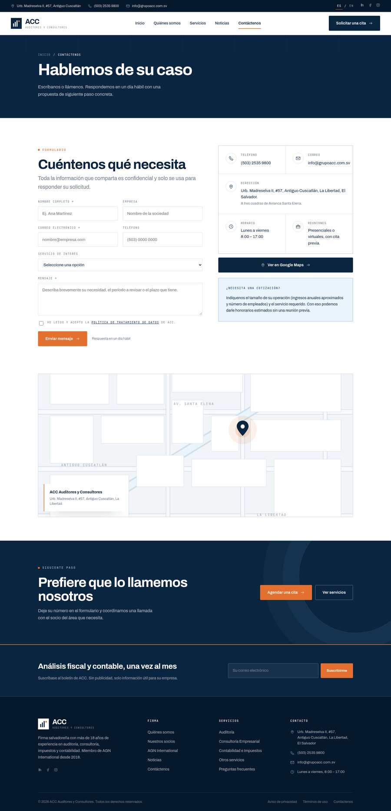
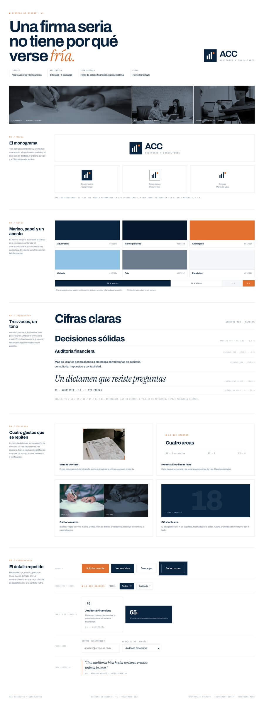

Nueve piezas: las ocho pantallas del sitio y la hoja de sistema que las unifica. Navegación funcional entre páginas, filtro de servicios, buscador de noticias y formulario operativo. Todas las pantallas son responsivas.

Hero a dos columnas, franja de afiliaciones, 4 categorías de servicio, diferenciales, cifras, socios, cita y noticias.
Abrir pantalla
Historia, línea de tiempo 2001–2018, misión/visión/valores, socios, personal y afiliaciones.
Abrir pantalla
Página interna enlazada desde Quiénes somos: red global, 5 regiones y ventajas.
Abrir pantalla
Los 22 servicios con filtro por categoría, proceso de trabajo y FAQ de 8 preguntas.
Abrir pantalla
Plantilla de servicio: alcance, entregables, proceso y barra lateral de contacto.
Abrir pantalla
Buscador funcional, nota destacada, rejilla de publicaciones y paginación.
Abrir pantalla
Plantilla de artículo con autor, imagen, cuerpo, compartir y relacionadas.
Abrir pantalla
Datos, formulario con validación, mapa de la oficina y aviso de confidencialidad.
Abrir pantalla
Hoja de identidad aplicada: monograma, paleta, tipografía, recursos gráficos y biblioteca de componentes.
Abrir pantallaMarino como color principal, blanco de fondo, anaranjado y celeste como secundarios, gris para texto de apoyo.
Archivo — titulares y texto.
Instrument Serif — acentos editoriales.
JetBrains Mono — datos y etiquetas.
Filtro de servicios por categoría, buscador de noticias, acordeón de FAQ, menú móvil, formulario con confirmación, selector ES/EN, suscripción al boletín.
Logotipo y fotografías reales, nombres de socios, textos de misión/visión definitivos, logotipos de AGN y Camarasal, y confirmación de la ubicación del FAQ.